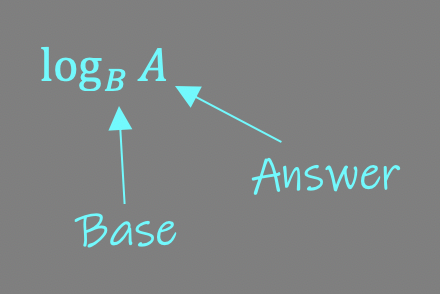

In the last module, we learned how to work with exponents that were decimals. In this lesson, we will learn how to get the exponent when we are given the Base and the answer, but no exponent. For example, we could be asked the question: 5?= 25? We need to determine the exponent that would make this statement true. This is where Logarithms come from.
First, we will learn how to write a logarithmic statement. Then we will learn how to solve them.
Let's look at the statements in column 2 and compare them to column 1. When you see a log statement, the subscript is the base, and the second number is the answer. Again, we must get the exponent that makes the statement true.. 
Note: You must have a calculator in order to do Logarithms and from this point on a calculator will be necessary to get the answer.
So let's look at an example and how to use your calculator to get the answer.
Log464
This statement means 4?= 64.
In your calculator, you will type in the following statement: ln 64 ÷ ln 4. You should see a button on your calculator labeled "ln" (LN). This is a button programmed into your calculator to help get the answer. You may also have a button called "LOG" and you can use this button instead: log 64 ÷ log 4.
Either way, you should get the answer of 3.
To check your answer, type "4 ^ 3 =" on your calculator. It should give you the answer of 64.
Example 2: Log381
Solution: In your calculator, type "ln 81 ÷ ln 3" or "log 81 ÷ log 3". You should get the answer of 4.
To check your answer, type "3 ^ 4 =". You should get 81.
Example 3: Log7343
Solution: In your calculator, type "ln 343 ÷ ln 7" or "log 343 ÷ log 7". You should get the answer of 3.
To check your answer, type "7 ^ 3 =". You should get 343.
Example 4: Log511.1803
Solution: In your calculator, type "ln 11.1803 ÷ ln 5" or "log 11.1803 ÷ log 5". You should get the answer of 1.5.
To check your answer, type "5 ^ 1.5 =". You should get 11.1803.
Example 5: Log121,728
Solution: In your calculator, type "ln 1,728 ÷ ln 12" or "log 1,728 ÷ log 12". You should get the answer of 3.
To check your answer, type "12 ^ 3 =". You should get 1,728.
So, Logarithms aren't that hard because it's all calculator work to get the answer.
Logarithms are best known for their use in the real world in measuring the magnitudes (or power) of earthquakes, called the Richter Scale.